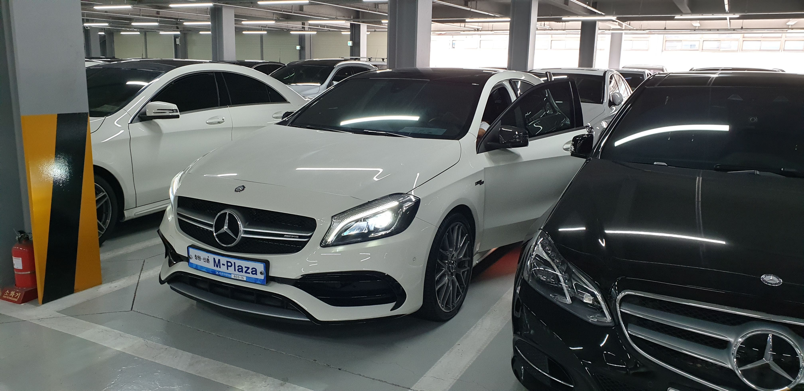
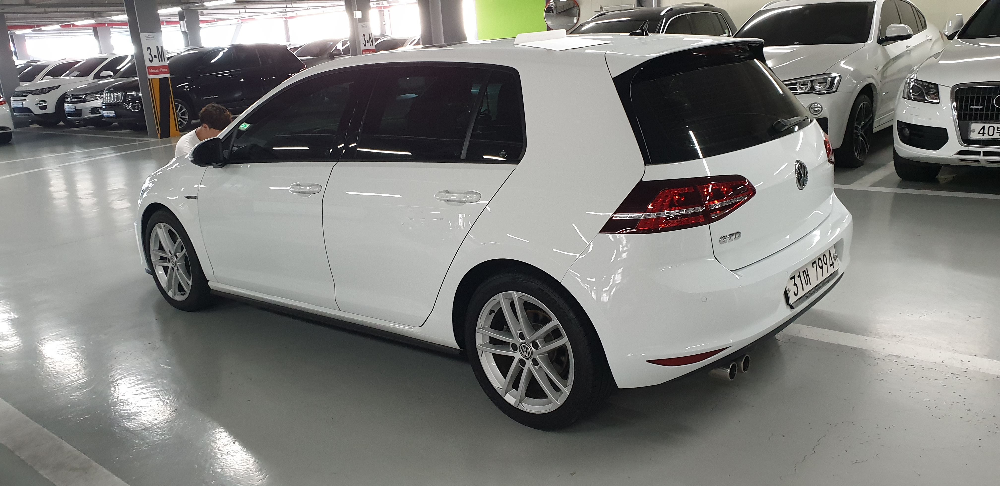
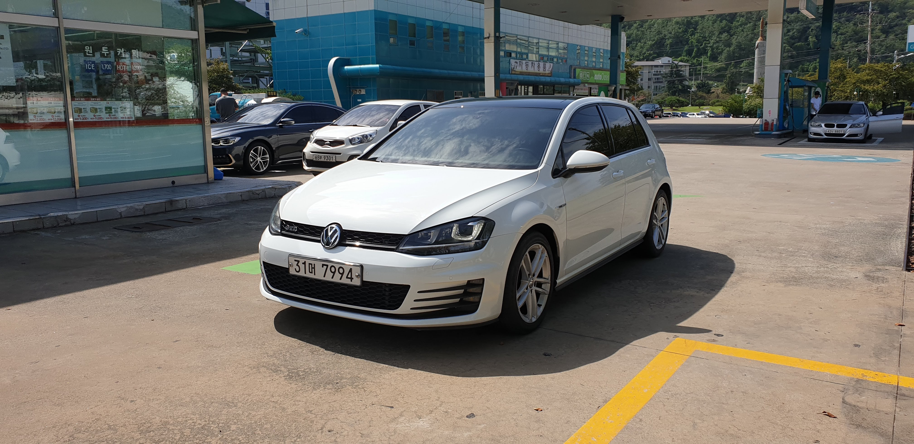
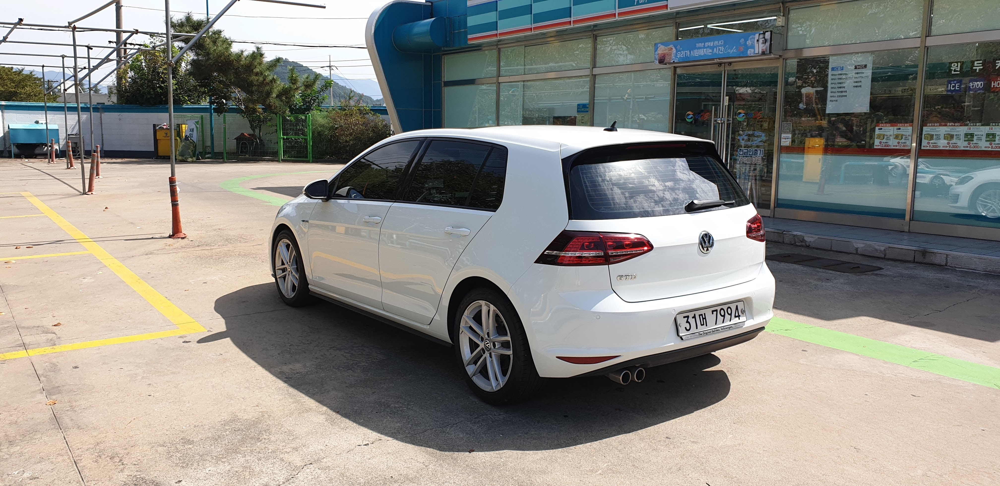
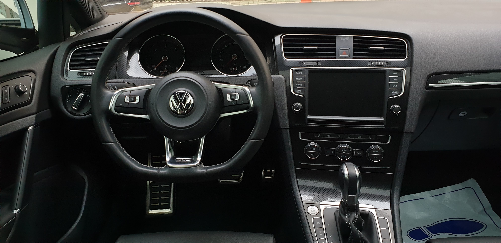
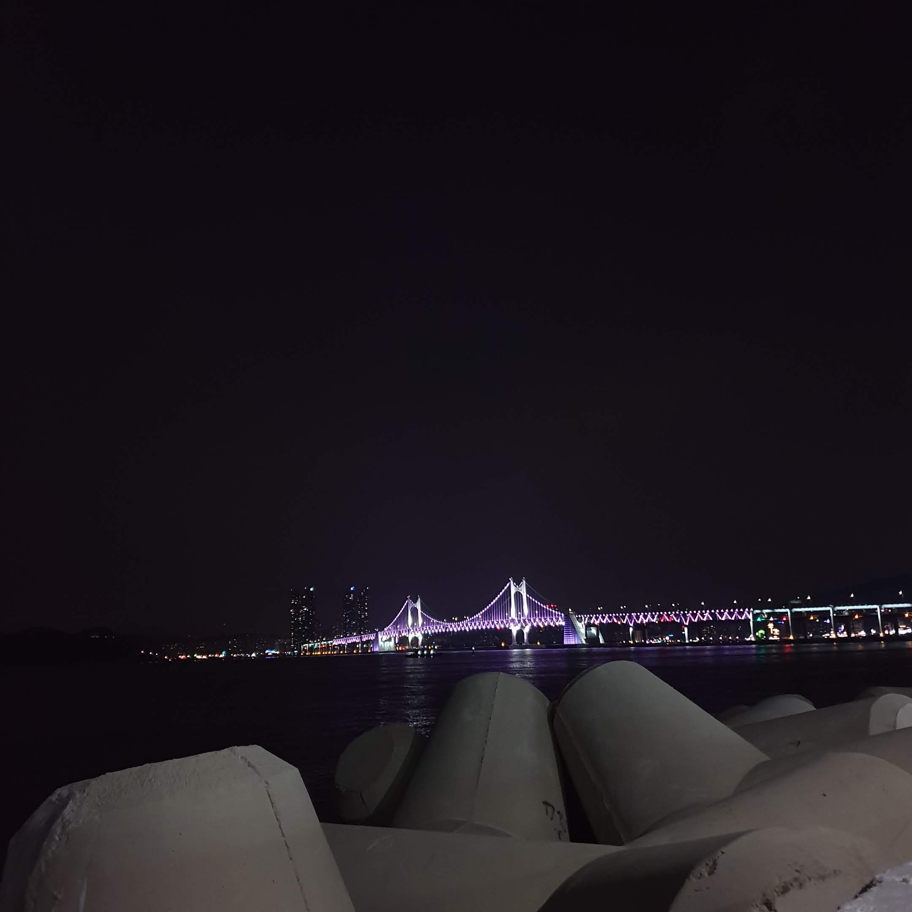

오늘은 기변을 하러 가는 날, 정말 많은 고민 끝에 기변을 결심했다.
애초에 6세대 GTD는 20만 키로를 생각하고 산 차였다. 하지만 사람 마음이 그렇지가 않은게 6세대를 타다보니 ‘6세대가 이렇게 재밌는데 7세대는 얼마나 재밌을까?’ 하는 궁금증이 계속해서 해소가 되지 않았다. 아이러니하게도 6세대가 너무 재미있는 차고, 잘 만든 차라서 이런 고민을 생각보다 빨리 하게된게 아닐까싶다.
굳이 불만을 꼽자면 실내 인테리어에 대한 아쉬움 정도, 외관은 여전히 6세대가 내 취향에 맞았지만 여러가지 고민 끝에 9월 17일, 약 8개월 가량 애지중지 타던 골프 6세대 GTD를 팔았다.
그리고 엔카 통해서 찾은 7세대 GTD 매물, 진짜 몇달간 찾아도 보이지 않던 매물이 시기 맞춰 나타나 줬다. 15년식 4만키로대 무사고 차량. 금액은 다소 비싸긴 했지만 몇달간 매물이 안 나오던 상황에서 더 기다려 봤자 좋은 매물을 찾을 수 있을지 알 수 없었기 때문에 과감히 지르기로 하고 차가 있는 경남 창원 매매 단지로 향했다.

창원 매매 단지에서 만난 A45 AMG, 해치백은 다 이쁘다.
아침일찍 출발해 오전중에 무사히 도착. 도착하자마자 A45 AMG 눈에 들어왔다.
해치백인데 그냥 넘어갈 수가 있나… 딜러분께 시동 걸어볼 수 있냐고 여쭤보니 흔쾌히 키를 가져다 주셨다.
역시 AMG, 넘치는 힘.
시동 배기음부터 악셀 밟을 때 배기음 까지 다르다... 마음 같아서는 몰아보고 싶은데, 한번 운전하면 마음을 빼앗길 지도 모르기 때문에 재빨리 골프를 보러 이동.
출고 위해 번호판 장착 중
수원, 인천과는 다르게 도착하자 마자 전화로 얘기했던 차가 준비되어 있었다. (사람마다 다를 순 있지만 내가 경험한 인천, 수원은 원하는 차를 보기까지 3~5정 대도 차를 거쳐야 볼 수가 있었다.) 첫차 구매시 놓쳤던 부분들을 생각 하면서 엔진 떨림, 타이어, 라이트 및 기타 실내 전자장비, 시트 상태까지 구석구석 컨디션을 체크하고 바로 계약을 진행했다.
전면, 아직은 6세대가 더 이뻐 보이긴 하다.

후면, 후면도 아직은 6세대가 더 이쁜 것 같다.
드디어 손에 들어온 7세대, GTI가 아니라 조금 아쉬운 부분도 있지만 GTD만의 재미가 있기 때문에 빨리 달려보고 싶다.

실내는 군더더기 없이 너무 이쁘다. 확실히 내 취향이다.
부산 도착하자마자 드라이브도 할겸 야경도 볼겸 바로 해운대 마린시티로 이동.
차를 바꿔서 그런지 바닷 바람이 좋아서 그런지 절로 기분이 좋아지는 밤이다.
하지만 외관은 아직도 썪 이뻐보이진 않는다. 😭

큰 맘먹고 창원까지 와서 기변하고 다시 부산까지.
이른 아침부터 힘든 일정이었는데 차도 잘 구매했고 이렇게 고향 바다를 보면서 멍때리니까 그 자체로 힐링이다.
7세대는 어떤 재미가 있을지, 오늘 도착했는데 벌써 올라갈 길이 기대된다.
반갑다 Golf GTD MK7! 👋
기록 끝.